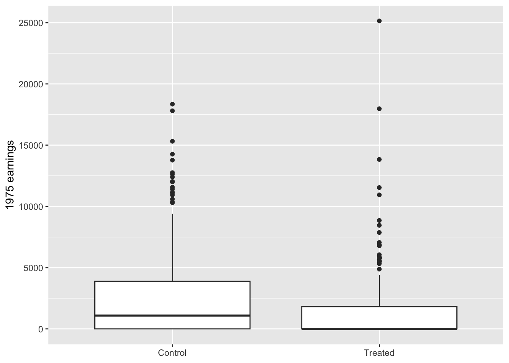
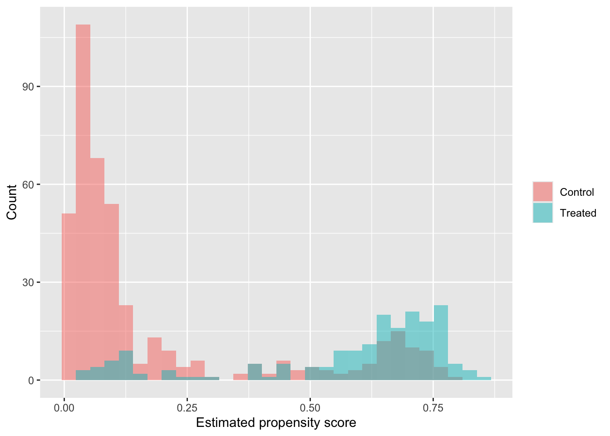
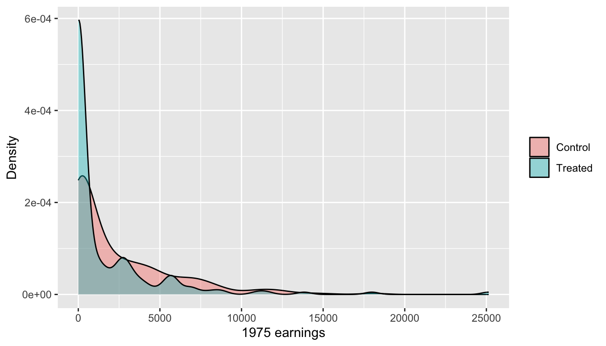
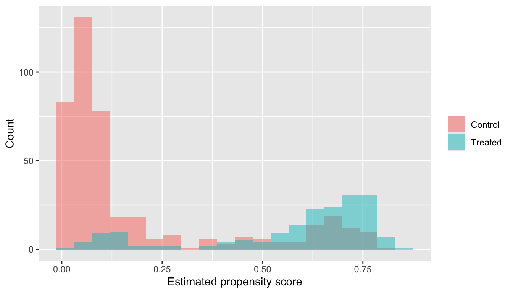

Chapter 11 Causal Inference
In this chapter, we begin our discussion of causal inference. We will not try to cover the subject in full here. Instead, we focus on a basic but important question: when we fit a regression model with a treatment variable, under what circumstances can we interpret the coefficient of that treatment variable causally?
A useful place to start is with observational data. In observational studies, the treated and untreated groups are often different before the treatment occurs. This means that a simple comparison of outcomes can mix together two things: the effect of the treatment itself, and baseline differences between the groups. Regression adjustment is one way to address this problem, but it does not solve it automatically.
We will work with the lalonde data set from the MatchIt package. The outcome variable is earnings in 1978 (re78), and the treatment variable treat indicates participation in a job-training program. The data also includes several pre-treatment covariates such as age, education, marital status, degree status, and earnings in 1974 and 1975.
We begin by looking at the structure of the data.
## treat age educ married
## Min. :0.0000 Min. :16.00 Min. : 0.00 Min. :0.0000
## 1st Qu.:0.0000 1st Qu.:20.00 1st Qu.: 9.00 1st Qu.:0.0000
## Median :0.0000 Median :25.00 Median :11.00 Median :0.0000
## Mean :0.3013 Mean :27.36 Mean :10.27 Mean :0.4153
## 3rd Qu.:1.0000 3rd Qu.:32.00 3rd Qu.:12.00 3rd Qu.:1.0000
## Max. :1.0000 Max. :55.00 Max. :18.00 Max. :1.0000
## nodegree re74 re75 re78
## Min. :0.0000 Min. : 0 Min. : 0.0 Min. : 0.0
## 1st Qu.:0.0000 1st Qu.: 0 1st Qu.: 0.0 1st Qu.: 238.3
## Median :1.0000 Median : 1042 Median : 601.5 Median : 4759.0
## Mean :0.6303 Mean : 4558 Mean : 2184.9 Mean : 6792.8
## 3rd Qu.:1.0000 3rd Qu.: 7888 3rd Qu.: 3249.0 3rd Qu.:10893.6
## Max. :1.0000 Max. :35040 Max. :25142.2 Max. :60307.9We start with the simplest possible regression model,
\[ \texttt{re78} = \beta_0 + \beta_1 \texttt{treat} + \varepsilon. \]
This model compares 1978 earnings between the treated and untreated groups without adjusting for any other variables.
## # A tibble: 2 × 7
## term estimate std.error statistic p.value conf.low conf.high
## <chr> <dbl> <dbl> <dbl> <dbl> <dbl> <dbl>
## 1 (Intercept) 6984. 361. 19.4 1.64e-65 6276. 7693.
## 2 treat -635. 657. -0.966 3.34e- 1 -1926. 655.It is also useful to look at the group means directly.
## # A tibble: 2 × 2
## treat mean_re78
## <int> <dbl>
## 1 0 6984.
## 2 1 6349.Note that getting the job training is not statistically significant, and the point estimate of the effect of training is negative 635 dollars. That means that the people who received traning had salaries on average lower than those who did not. One might conclude that the program did not help. However, this conclusion would be too quick. The data are observational, not randomized, so it is entirely possible that the treated and untreated groups differed before the program began.
11.0.1 Baseline Differences Between the Groups
To investigate this, we compare some pre-treatment covariates across the two groups.
aa |>
group_by(treat) |>
summarise(
across(c(age, educ, re74, re75), mean),
married = mean(married),
nodegree = mean(nodegree),
.groups = "drop"
)## # A tibble: 2 × 7
## treat age educ re74 re75 married nodegree
## <int> <dbl> <dbl> <dbl> <dbl> <dbl> <dbl>
## 1 0 28.0 10.2 5619. 2466. 0.513 0.597
## 2 1 25.8 10.3 2096. 1532. 0.189 0.708We can also visualize one of the most important pre-treatment variables, namely earnings in 1975.
aa |>
mutate(treat = factor(treat, levels = c(0, 1), labels = c("Control", "Treated"))) |>
ggplot(aes(x = treat, y = re75)) +
geom_boxplot() +
labs(x = NULL, y = "1975 earnings")
We see that the treated and untreated groups are not the same at baseline. In particular, prior earnings differ substantially. This matters because prior earnings are measured before treatment, and they are strongly related to later earnings. If the treated group started out at a disadvantage, then a raw treated-versus-control comparison is not isolating the effect of treatment. It is combining the effect of treatment with the fact that the treated and untreated groups were different to begin with.
This is the basic idea of confounding. A confounder is a variable that is related both to treatment assignment and to the outcome. Prior earnings are a natural example in this setting.
A natural first thing to do is to control for the observed pre-treatment covariates in a regression model. For example, we can fit
\[ \texttt{re78} = \beta_0 + \beta_1 \texttt{treat} + \beta_2 X + \varepsilon, \]
where \(X\) denotes the baseline covariates.
mod_adj <- lm(
re78 ~ treat + age + educ + race + married + nodegree + re74 + re75,
data = aa
)
mod_adj |>
tidy(conf.int = TRUE)## # A tibble: 10 × 7
## term estimate std.error statistic p.value conf.low conf.high
## <chr> <dbl> <dbl> <dbl> <dbl> <dbl> <dbl>
## 1 (Intercept) -1174. 2456. -0.478 0.633 -5998. 3650.
## 2 treat 1548. 781. 1.98 0.0480 13.9 3083.
## 3 age 13.0 32.5 0.399 0.690 -50.8 76.8
## 4 educ 404. 159. 2.54 0.0113 91.9 716.
## 5 racehispan 1740. 1019. 1.71 0.0882 -261. 3740.
## 6 racewhite 1241. 769. 1.61 0.107 -269. 2750.
## 7 married 407. 695. 0.585 0.559 -959. 1772.
## 8 nodegree 260. 847. 0.307 0.759 -1404. 1924.
## 9 re74 0.296 0.0583 5.09 0.000000489 0.182 0.411
## 10 re75 0.232 0.105 2.21 0.0273 0.0261 0.437The treatment coefficient changes noticeably after adjustment. Now, it is statistically significant and positive. Our estimate is that the job training program is associated with an increase of 1548 dollars after adjusting for the other covariates.
Regression adjustment is therefore useful. It can remove bias due to observed baseline differences, at least when the model is doing a reasonable job of adjustment. At the same time, it is important not to say more than the model justifies. It would not be justified to say that participation in the pogram increased 1978 earnings, because that is assigning causality to the program. All we know is that it is associated with an increase after adjusting for the other covariates. In order to justify a causality claim, we would need to believe that after controlling for the observed pre-treatment covariates, the treated and untreated groups are comparable in all ways relevant to the outcome.
This is a much stronger claim than simply saying that we included several variables in a regression. A regression coefficient is not automatically causal just because it comes from a multiple regression model. The causal interpretation comes from the assumptions we are willing to defend.
A good way to summarize the distinction is the following:
- The naive model compares treated and untreated units directly.
- The adjusted model compares treated and untreated units after controlling for observed baseline covariates.
- A causal interpretation requires that this adjusted comparison be a good stand-in for the missing counterfactual comparison, see below for details on counterfactuals.
One way to formalize the causal question is through the potential outcomes framework. For each individual \(i\), let
- \(Y_i(1)\) be the earnings that person \(i\) would have if treated;
- \(Y_i(0)\) be the earnings that person \(i\) would have if untreated.
The individual causal effect is then
\[ Y_i(1) - Y_i(0). \]
The difficulty is that we never observe both values for the same person. If person \(i\) is treated, then we observe \(Y_i(1)\) but not \(Y_i(0)\). If person \(i\) is untreated, then we observe \(Y_i(0)\) but not \(Y_i(1)\). The observed outcome can be written as
\[ Y_i = D_iY_i(1) + (1-D_i)Y_i(0), \]
where \(D_i\) is the treatment indicator. That is, \(D_i = 1\) if treatment is received and \(D_i = 0\) if no treatment is received.
This is the fundamental problem of causal inference. For each person, one of the two relevant outcomes is missing. In observational data, we use untreated individuals as stand-ins for the missing untreated outcomes of the treated group, or treated individuals as stand-ins for the missing treated outcomes of the untreated group. The central question is whether those stand-ins are credible.
In the present example, the raw comparison is not especially credible because the groups differ so much at baseline. The adjusted regression is more credible, but only to the extent that the included covariates capture the important differences between the two groups. In particular, there is nothing about the multiple regression that directly tries to make the two groups comparable; if it happens, it is fortuitous.
Later, we will study a different way to organize this comparability problem. Rather than putting all of the adjustment into a single outcome regression, we can first ask how likely each unit was to receive treatment based on the observed pre-treatment covariates.
This leads to the propensity score, defined by
\[ e(X) = P(D = 1 \mid X). \]
Here, \(X\) denotes the observed pre-treatment covariates. Units with similar propensity scores have similar observed baseline characteristics, at least in the sense relevant for treatment assignment. The idea is then to compare treated and untreated units that were similarly likely to receive treatment in the first place.
We will not develop propensity scores fully in this section, but we can at least estimate them and inspect the results. A common first step is to fit a logistic regression for treatment.
ps_mod <- glm(
treat ~ age + educ + race + married + nodegree + re74 + re75,
data = aa,
family = binomial()
)
aa_ps <- ps_mod |>
augment(data = aa, type.predict = "response") |>
mutate(
treat = factor(treat, levels = c(0, 1), labels = c("Control", "Treated"))
)
ps_mod |>
tidy()## # A tibble: 9 × 5
## term estimate std.error statistic p.value
## <chr> <dbl> <dbl> <dbl> <dbl>
## 1 (Intercept) -1.66 0.971 -1.71 8.67e- 2
## 2 age 0.0158 0.0136 1.16 2.45e- 1
## 3 educ 0.161 0.0651 2.48 1.33e- 2
## 4 racehispan -2.08 0.367 -5.67 1.44e- 8
## 5 racewhite -3.07 0.287 -10.7 1.03e-26
## 6 married -0.832 0.290 -2.87 4.15e- 3
## 7 nodegree 0.707 0.338 2.09 3.62e- 2
## 8 re74 -0.0000718 0.0000287 -2.50 1.25e- 2
## 9 re75 0.0000534 0.0000463 1.15 2.49e- 1We can now look at the estimated propensity scores by treatment group.
aa_ps |>
ggplot(aes(x = .fitted, fill = treat)) +
geom_histogram(alpha = 0.5, bins = 30, position = "identity") +
labs(x = "Estimated propensity score", y = "Count", fill = NULL)
The plot is not itself a causal analysis, but it begins to show us something that the outcome regression did not show directly: how much overlap there is between the treated and untreated groups on the observed baseline covariates. Later, this idea of overlap will become central. In this particular plot, notice that there is not a lot of overlap between control and treated in the low propensity score group. This means that there is some combination of covariates which almost uniformly led participants not to get job training. That is somewhat bad news for causal analysis in general, and certainly should lead to hesitancy in interpreting the multiple regression output causally. We expect to see some predictive power of the covariates on whether the treatment was received, but we are hoping to still see significant overlap for our causal analysis. There are techniques for dealing with data like this which we will discuss in later sections.
11.0.2 Summary
This section makes three points.
First, a simple regression of outcome on treatment can be misleading in observational data because treated and untreated groups often differ before treatment occurs.
Second, regression adjustment can account for observed baseline differences and can change the treatment estimate substantially. In the job-training example, this is exactly what happens.
Third, even an adjusted regression is not automatically causal. The causal interpretation requires additional assumptions about comparability between the treated and untreated groups after adjustment.
Propensity scores give us another way to think about that comparability. They do not remove the need for assumptions, but they make the adjustment problem more explicit. In the next part of our causal inference discussion, we will use them to study matching and related methods.
11.1 Identification Assumptions for Causal Adjustment
In the previous section, we saw that a naive regression of later earnings on treatment in the Lalonde data gave a different answer than a regression that adjusted for observed baseline covariates. That already tells us something important: the treated and control groups were different before treatment. In observational work, that is the rule rather than the exception.
The next question is the more important one. When does an adjusted comparison deserve a causal interpretation? Regression adjustment can be part of a causal analysis, but the causal interpretation does not come from the software output. It comes from the assumptions that justify using treated and untreated units as stand-ins for one another’s missing counterfactual outcomes.
Throughout this section, we continue to use the Lalonde job-training data. The treatment is participation in the job-training program, and the outcome is earnings in 1978.
library(tidyverse)
library(MatchIt)
library(broom)
data("lalonde")
aa <- lalonde |>
as_tibble() |>
mutate(
treat = factor(treat, levels = c(0, 1), labels = c("Control", "Treated")),
race = factor(race),
married = factor(married, levels = c(0, 1), labels = c("No", "Yes")),
nodegree = factor(nodegree, levels = c(0, 1), labels = c("No", "Yes"))
)We will use the following observed pre-treatment covariates throughout this section:
ageeduc- `race``
marriednodegreere74re75
11.1.1 Assumptions for Causal Adjustment
We continue to write the potential outcomes for person \(i\) as \(Y_i(1)\) and \(Y_i(0)\), where these represent that person’s 1978 earnings under treatment and under control, respectively. The observed outcome is
\[ Y_i = D_iY_i(1) + (1-D_i)Y_i(0). \]
This is the formal statement of consistency. If a person is treated, then the observed outcome is the treated potential outcome; if a person is untreated, then the observed outcome is the untreated potential outcome. This sounds automatic, but it depends on the treatment being defined clearly enough that \(Y(1)\) and \(Y(0)\) are meaningful. If the treatment were simply coded as “exercise,” then the treated condition might bundle together walking, weight lifting, marathon training, yoga, and many other interventions. In that situation, the meaning of \(Y(1)\) becomes murky. Likewise, if “job training” bundled together many radically different programs, then the treated potential outcome would be less clearly defined.
The most important assumption in observational work is ignorability:
\[ (Y(1), Y(0)) \perp D \mid X. \]
In words, after conditioning on the observed pre-treatment covariates \(X\), treatment assignment is independent of the potential outcomes. A slightly more informal version is often easier to remember: once we control for the relevant observed pre-treatment variables, treated and untreated units are comparable on average. This assumption is also called no unmeasured confounding or selection on observables.
It is important to be clear about what ignorability does and does not say. It does not say that treatment is random in the raw data. It says that treatment is as if random after conditioning on the chosen covariates. That is why the choice of covariates matters so much.
This connects directly to the informal backdoor idea. If a variable is a common cause of treatment and outcome, then failing to adjust for it creates a noncausal association between treatment and outcome. In the Lalonde data, prior earnings are a natural example. Someone’s 1975 earnings may affect whether they enter the training program, and 1975 earnings will also help predict 1978 earnings. In that case, re75 is a confounder, and adjusting for it blocks a noncausal path between treatment and outcome.
A third important assumption is positivity, sometimes called overlap:
\[ 0 < P(D = 1 \mid X = x) < 1 \]
for the values of \(x\) we care about. In plain language, this means that for covariate profiles of interest, there must be some chance of both treatment and control. If units with certain covariates are always treated, or always untreated, then we do not have comparable treated and control units in that part of the covariate space. In practice, this means that causal adjustment requires overlap. No overlap means no apples-to-apples comparison.
A final assumption that is worth stating no interference. One person’s treatment should not directly affect another person’s outcome. In the job-training setting, this could fail if treated and untreated workers are competing for the same jobs in the same market. We will not focus on interference in this chapter, but it is worth keeping in mind.
These assumptions help explain why regression is not the opposite of causal inference. Regression is one tool that causal inference can use. The causal interpretation depends on whether the regression is implementing a defensible comparison.
There is one more practical point to make before returning to the Lalonde data. A good control is generally a variable measured before treatment that affects both treatment assignment and the outcome. A bad control is a variable that is downstream of treatment or a collider. For example, if a job-search intervention improves later mental health partly by increasing job-search confidence, then controlling for job-search confidence would remove part of the very treatment effect we are trying to estimate. If the goal is the total effect of treatment, post-treatment mediators are bad controls.
The jobs data in the mediation package give a nice example. The treatment variable is treat, the outcome is depress2, and job_seek is a plausible post-treatment mediator. In the code below, the third model adds job_seek after treatment has already occurred.
jobs2 <- mediation::jobs |>
as_tibble()
mod1 <- lm(depress2 ~ treat, data = jobs2)
mod2 <- lm(depress2 ~ treat + econ_hard + sex + age, data = jobs2)
mod3 <- lm(depress2 ~ treat + econ_hard + sex + age + job_seek, data = jobs2)
bind_rows(
tidy(mod1) |> mutate(model = "Treatment only"),
tidy(mod2) |> mutate(model = "Baseline controls"),
tidy(mod3) |> mutate(model = "Adds post-treatment variable")
) |>
filter(term == "treat") |>
dplyr::select(model, estimate, std.error, statistic, p.value)## # A tibble: 3 × 5
## model estimate std.error statistic p.value
## <chr> <dbl> <dbl> <dbl> <dbl>
## 1 Treatment only -0.0633 0.0461 -1.37 0.170
## 2 Baseline controls -0.0560 0.0452 -1.24 0.215
## 3 Adds post-treatment variable -0.0403 0.0435 -0.926 0.355When the coefficient on treatment changes after job_seek is added, that is not automatically an improvement. If job_seek lies on the causal pathway from treatment to the outcome, then controlling for it changes the estimand. This is why “control for everything” is not safe advice.
11.1.2 The Lalonde Data Revisited
We return now to the Lalonde data. The first thing to notice is that the treated and control groups differ on several observed pre-treatment covariates.
aa |>
group_by(treat) |>
summarize(
n = n(),
age = mean(age),
educ = mean(educ),
re74 = mean(re74),
re75 = mean(re75),
.groups = "drop"
)## # A tibble: 2 × 6
## treat n age educ re74 re75
## <fct> <int> <dbl> <dbl> <dbl> <dbl>
## 1 Control 429 28.0 10.2 5619. 2466.
## 2 Treated 185 25.8 10.3 2096. 1532.aa |>
group_by(treat) |>
summarize(
percent_black = mean(race == "black"),
percent_hispanic = mean(race == "hispan"),
percent_white = mean(race == "white"),
married = mean(married == "Yes"),
nodegree = mean(nodegree == "Yes"),
.groups = "drop"
)## # A tibble: 2 × 6
## treat percent_black percent_hispanic percent_white married nodegree
## <fct> <dbl> <dbl> <dbl> <dbl> <dbl>
## 1 Control 0.203 0.142 0.655 0.513 0.597
## 2 Treated 0.843 0.0595 0.0973 0.189 0.708These are all pre-treatment variables, so differences here are a warning sign for confounding rather than an effect of treatment. In particular, prior earnings differ between the groups, and prior earnings are highly relevant for later earnings.
We can see again that the naive and adjusted regressions tell different stories.
mod_naive <- lm(re78 ~ treat, data = aa)
mod_adj <- lm(
re78 ~ treat + age + educ + race + married + nodegree + re74 + re75,
data = aa
)
bind_rows(
tidy(mod_naive, conf.int = TRUE) |> mutate(model = "Naive"),
tidy(mod_adj, conf.int = TRUE) |> mutate(model = "Adjusted")
) |>
filter(term == "treatTreated") |>
dplyr::select(model, estimate, conf.low, conf.high, p.value)## # A tibble: 2 × 5
## model estimate conf.low conf.high p.value
## <chr> <dbl> <dbl> <dbl> <dbl>
## 1 Naive -635. -1926. 655. 0.334
## 2 Adjusted 1548. 13.9 3083. 0.0480The sign change is a strong indication that the raw treatment comparison was confounded by observed baseline differences. This does not prove that the adjusted model is causal, but it does show that adjustment matters.
It is useful to visualize overlap directly. We start with one important pre-treatment covariate, 1975 earnings.
ggplot(aa, aes(x = re75, fill = treat)) +
geom_density(alpha = 0.4) +
labs(x = "1975 earnings", y = "Density", fill = NULL)
Where the two distributions overlap, comparison is more plausible. Where they are far apart, adjustment begins to rely on extrapolation. This same idea can be summarized more compactly by the propensity score, which we define as
\[ e(X) = P(D = 1 \mid X). \]
For now, we use the propensity score only as a way to study overlap. We estimate it with logistic regression using the observed pre-treatment covariates.
ps_mod <- glm(
treat ~ age + educ + race + married + nodegree + re74 + re75,
data = aa,
family = binomial()
)
aa_ps <- ps_mod |>
augment(data = aa, type.predict = "response") |>
mutate(ps = .fitted) |>
dplyr::select(-.fitted)Now we look at the distributions of the estimated propensity scores in the treated and control groups.
ggplot(aa_ps, aes(x = ps, fill = treat)) +
geom_histogram(position = "identity", alpha = 0.5, bins = 20) +
labs(x = "Estimated propensity score", y = "Count", fill = NULL)
The treated units tend to have higher estimated probabilities of treatment than the control units. This is the expected direction. The issue is not that the graph is backwards. The issue is that the groups may be too separated. Good causal adjustment needs overlap, not simply a treatment model that predicts treatment well. If treated and control units have little overlap in propensity score, then there are few comparable units to compare.
This is the main reason to introduce propensity scores in the first place. Regression adjustment hides the comparability problem inside a single coefficient. Propensity scores make it easier to inspect whether treated and untreated units are similar on the observed pre-treatment covariates and whether common support is adequate.
The big lesson from this section is that adjusted comparisons only deserve a causal interpretation under assumptions. Consistency tells us that the treatment must be defined clearly enough for the potential outcomes to make sense. Ignorability says that after conditioning on the observed pre-treatment covariates, treatment assignment is as good as random. Positivity says that comparable treated and control units must exist. Finally, the discussion of bad controls reminds us that adjustment can go wrong when we condition on variables that are affected by treatment. The next section uses propensity scores more directly to organize causal comparisons in observational data.
11.1.3 Vocabulary and an Example
In causal inference, we imagine that each unit has more than one possible outcome. For a household in the retrofit study, one outcome is the amount of gas it would use if it received the retrofit, and another is the amount it would use if it did not. These are called the potential outcomes. We never observe both outcomes for the same household, which is why causal inference is difficult in the first place. The whole enterprise is an attempt to learn something about the missing counterfactual outcome from the data we do observe.
Consistency says that the observed outcome under the treatment actually received is the corresponding potential outcome. If a household received the retrofit, then its observed gas use is its treated potential outcome; if it did not, then its observed gas use is its untreated potential outcome. This sounds automatic, but it depends on the treatment being defined clearly enough that the phrase “received the retrofit” has a reasonably stable meaning. If treated households received wildly different interventions, then the treated potential outcome \(Y(1)\) would be less clearly defined.
Ignorability means that after we condition on the observed pre-treatment covariates, treatment assignment is independent of the potential outcomes. In practice, this is the assumption that after adjusting for the right observed baseline variables, treated and untreated units are comparable on average. This is also called no unmeasured confounding or selection on observables. It is the key assumption that turns an adjusted observational comparison into a candidate causal estimate.
A confounder is a variable that affects both treatment assignment and the outcome. Confounders are the reason naive treated-versus-control comparisons can be misleading. A good confounder to keep in mind is a variable that helps explain both who receives treatment and what the outcome would have looked like anyway. In the retrofit example, prior gas use is a natural candidate because households with high prior gas use may be more likely to receive the retrofit and also more likely to have high future gas use.
The informal backdoor idea is a way to think about confounding without too much notation. If a variable is a common cause of treatment and outcome, then it creates a noncausal path between them. Adjusting for that variable blocks that path. This gives a practical way to think about which variables belong in an adjustment set: we look for pre-treatment variables that help explain why treated and untreated units differ before treatment begins.
Positivity, also called overlap, means that for the covariate values we care about, there must be some chance of both treatment and control. In plain language, the treated and untreated groups must actually contain comparable units. Even if we measure many sensible covariates, a causal analysis becomes difficult if some kinds of units are almost always treated and others are almost always untreated. Lack of overlap is not something that adjustment can solve; it is a limitation of the data.
A propensity score is the probability of treatment given the observed pre-treatment covariates. It summarizes many baseline covariates into a single number that describes how likely treatment was, based on what we observed before treatment began. Propensity scores do not remove unmeasured confounding, but they are useful for checking overlap and organizing comparisons among units that look similar on the observed covariates.
A mediator is a variable that lies on the causal pathway from treatment to outcome. Mediators are important if we want to understand how treatment works, but they are usually bad controls if the goal is the total effect of treatment. Controlling for a mediator blocks part of the very effect we are trying to estimate.
A collider is a variable that is caused by two other variables. Conditioning on a collider can create a spurious association between those causes, which is why colliders are bad controls. This is different from the mediator problem. A mediator is bad because it blocks part of a real causal effect. A collider is bad because conditioning on it can open a false path and induce bias. Note that often a collider is caused by one variable in the data (such as treatment) and one unmeasured variable (such as organization or motivation). Colliders can be hard to see, but it is important not to condition on them.
A bad control is a variable that should not be conditioned on in a causal analysis. Two common kinds of bad controls are mediators and colliders. The main lesson is that “control for everything” is not a safe rule. Some variables help create comparability; others distort the comparison.
One last idea is that of no interference: one unit’s treatment should not directly affect another unit’s outcome. In the retrofit study, this would mean that one household’s retrofit does not directly change another household’s gas use.